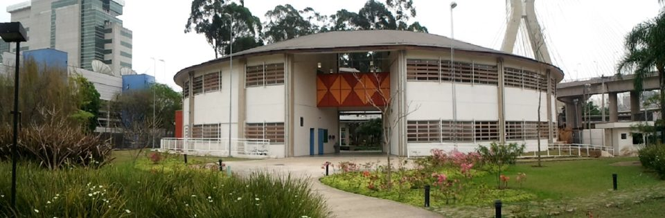

Quem sou eu?
👋 Olá! Eu me chamo Pedro e sou estudante de Informática para Web na ETEC Jornalista Roberto Marinho. Tenho grande interesse por desenvolvimento web, Python, bancos de dados e estou iniciando meus estudos em cibersegurança. Estou construindo este portfólio para compartilhar meus projetos, certificados e aprendizados na área de tecnologia.
🎓 Escolaridade
Atualmente, estou cursando o Ensino Médio integrado ao curso técnico de Informática para Web na ETEC Jornalista Roberto Marinho. Durante minha formação, tenho estudado e desenvolvido projetos utilizando HTML, CSS, JavaScript, Python e MySQL, com foco na criação de sites, aplicações web e no gerenciamento de bancos de dados.
Além do conteúdo técnico, a formação proporciona conhecimentos em lógica de programação, desenvolvimento de sistemas e noções de segurança digital. Paralelamente, complemento meus estudos com cursos livres e certificados em plataformas online, como os cursos do professor Gustavo Guanabara e a Fundação Bradesco.